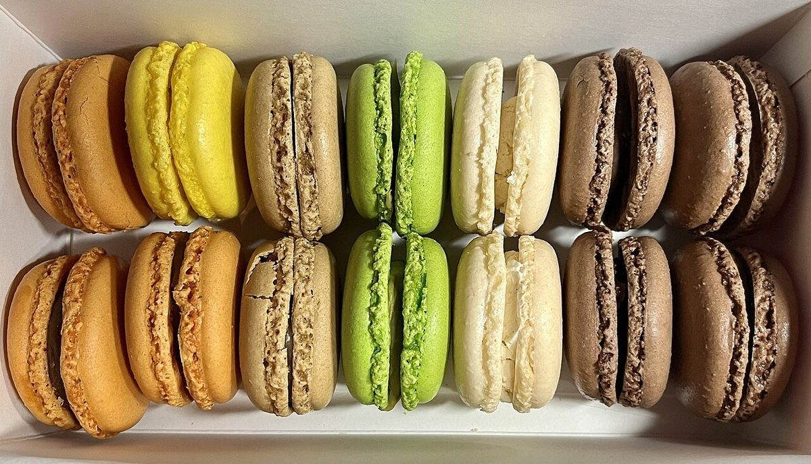
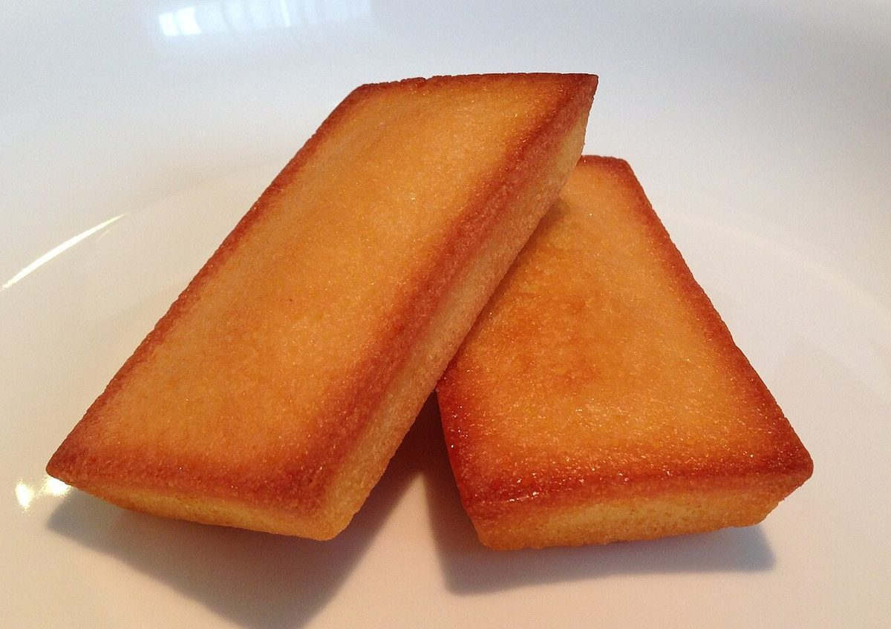
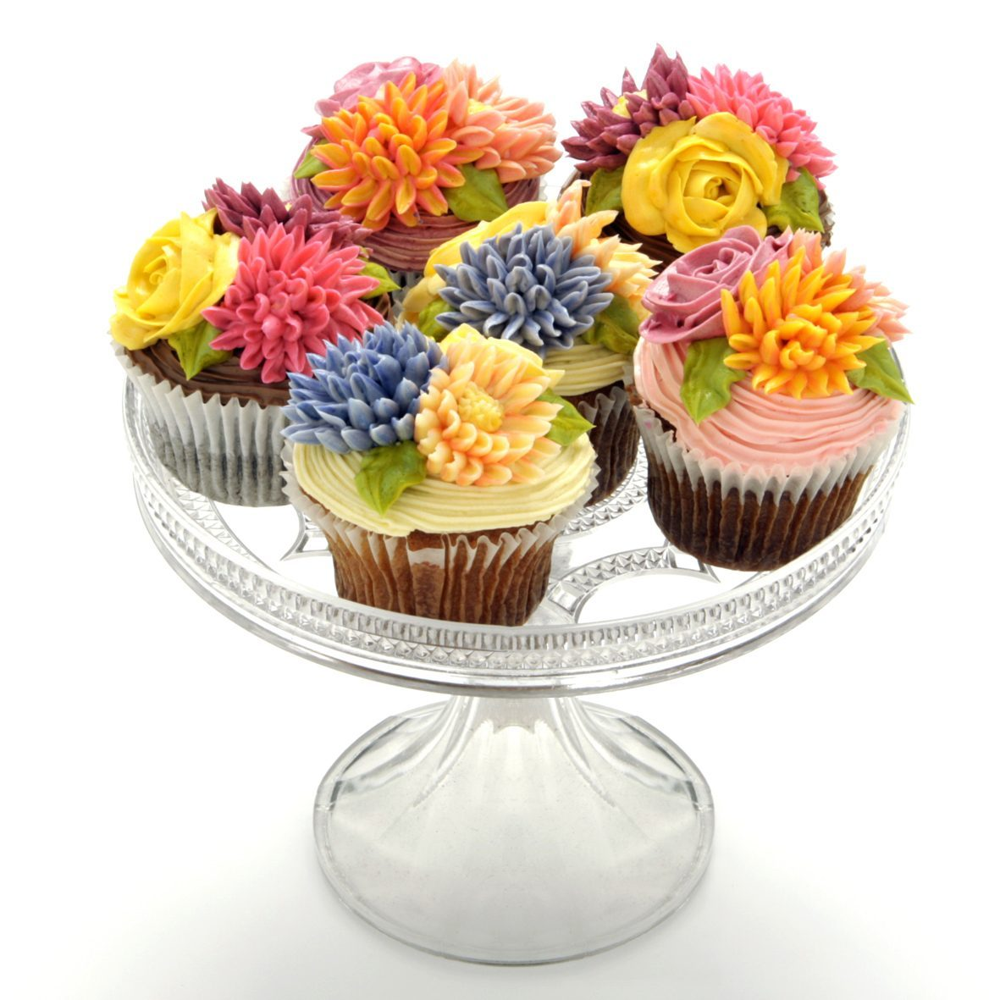
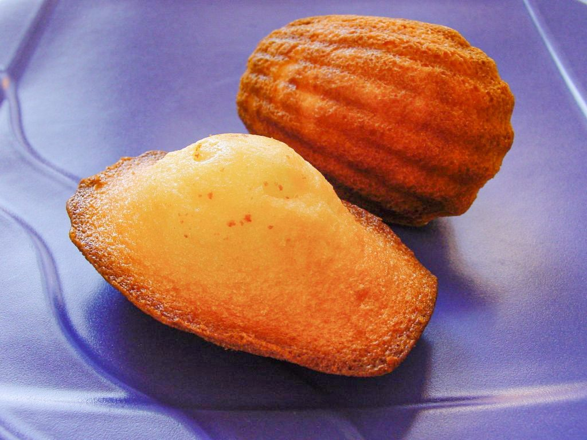

ならべる

洋菓子のイメージ写真を並べています。実際の商品はお店のInstagramでご確認ください。

パティスリーミーミー
洋菓子店 / 広島県府中市鵜飼町
電話 0847-46-0330
この試作サイトの題材
カタカナの「ミ」は、斜めの線が三本。並べるとフォークの先のようにも見えます。このサイトでは「ミ」を三本の歯に見立て、ページを歯ごとに分けて並べました。※制作側の連想で、お店の理念・由来とは無関係です。

洋菓子のイメージ写真を並べています。実際の商品はお店のInstagramでご確認ください。

メニュー・価格・営業時間は準備中です。確認でき次第、お店ご提供の情報に差し替えます。

所在地は〒726-0002 広島県府中市鵜飼町５７９−３。電話は 0847-46-0330。



最新の様子はInstagramでご覧ください。
Instagramをのぞく アクセスを見る